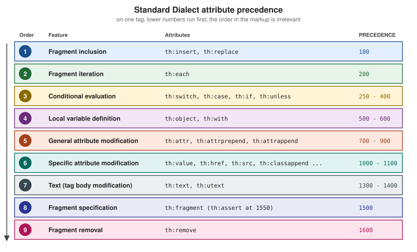

Local Variables, Attribute Precedence, Comments & Blocks
|
This content was generated with the assistance of AI and should be verified against the official documentation before being relied on in production. |
This page is written against Thymeleaf 3.1.5.RELEASE (2026-04-21), Spring Boot 4.1.1 (Spring Framework 7.0.9) and Java 21, checked on 2026-10-08, and every
example was compiled and run on that stack in a scratch Bookshelf application (Spring MVC, MockMvc, H2 in memory). Everything here belongs to the Standard Dialect
and the template parser, so it applies to Thymeleaf standalone, with Spring MVC and with Spring WebFlux alike; only the expression language differs
(OGNL standalone, SpEL with Spring), and the examples use SpEL. It covers four small features that are used in almost every real template: declaring local
variables with th:with, the precedence that decides which th:* attribute runs first when several sit on one tag, the three kinds of comments
(standard, parser-level and prototype-only), and the synthetic th:block element.
Local variables
A local variable is a variable defined for one fragment of a template and visible only inside it. You already know one: the iteration variable of th:each
(b in th:each="b : ${books}") exists only on the element that declares it, in the th:* attributes that run after th:each on the same tag, and in every
child of that element. Thymeleaf also lets you declare local variables without iterating, with th:with. Its value is a comma-separated list of
name=expression assignments, the same syntax as th:attr. When th:with is processed, each variable is added to the variables map coming from the model (the
context) and is available together with every model variable, but only within the bounds of the tag that carries it.
The controller below feeds every example of this page. It adds three books (the last without an author, to show null handling), a date and a featured book:
@Controller
@RequestMapping("/t12")
public class ScopeController {
@GetMapping("/{view}")
public String view(@PathVariable String view, Model model) {
model.addAttribute("books", List.of(book("Dune", "Frank Herbert"),
book("Neuromancer", "William Gibson"), book("Anonymous Pamphlet", null)));
model.addAttribute("today", LocalDate.of(2026, 10, 8));
model.addAttribute("featured", book("Snow Crash", "Neal Stephenson"));
return "t12/" + view;
}
}This controller maps a path variable straight to a view name only because the scratch application has a fixed list of views; in a real application never build a view name from request input.
th:with: one, several and chained variables
<section th:with="first=${books[0]},second=${books[1]}">
<p>First: <span th:text="${first.title}">Dune</span> by <span th:text="${first.author}">Frank Herbert</span></p>
<p>Second: <span th:text="${second.title}">Neuromancer</span></p>
</section>
<p id="outside">Outside the section: [<span th:text="${first}">first is gone</span>]</p>
<ul th:with="total=${#lists.size(books)},label=${total == 1 ? 'book' : 'books'}">
<li th:text="|${total} ${label} on the shelf|">3 books on the shelf</li>
</ul>The rendered output shows that first is defined inside the section and is gone after it (th:text of a null renders an empty body). The second list also shows
that a later assignment in the same attribute can use an earlier one: label reads total.
<section>
<p>First: <span>Dune</span> by <span>Frank Herbert</span></p>
<p>Second: <span>Neuromancer</span></p>
</section>
<p id="outside">Outside the section: [<span></span>]</p>
<ul>
<li>3 books on the shelf</li>
</ul>A localised date format
A typical use is evaluating something once and reusing it. The format string below comes from a message bundle (date.format=MMMM dd, yyyy in
messages.properties), and th:with puts it into a variable that the date formatter then uses:
<p th:with="df=#{date.format}">
Today is <span th:text="${#temporals.format(today, df)}">October 08, 2026</span>
</p>
<p>
Today is
<span th:with="df=#{date.format}" th:text="${#temporals.format(today, df)}">October 08, 2026</span>
</p>Both paragraphs render Today is October 08, 2026. The second form puts th:with and th:text on the same span, which works because th:with has a lower
precedence number than th:text and therefore runs first (see the next section). Here #temporals is the java.time utility object; the tutorial’s own example
uses #calendars for java.util.Calendar.
Scope, shadowing and th:object
Local variables are lexically scoped. A nested th:with with the same name shadows the outer variable inside its own element and the outer value returns after
it. The iteration variable can feed a th:with on the same tag, and th:with can read the selection target that th:object set on the same tag:
<div th:with="title='Outer'">
<p th:text="${title}">a</p>
<div th:with="title='Inner'"><p th:text="${title}">b</p></div>
<p th:text="${title}">c</p>
</div>
<ul>
<li th:each="b : ${books}" th:with="shout=${#strings.toUpperCase(b.title)}" th:text="${shout}">TITLE</li>
</ul>
<div th:object="${featured}" th:with="t=*{title},a=*{author}">
<p th:text="|${t} by ${a}|">x</p>
</div><div>
<p>Outer</p>
<div><p>Inner</p></div>
<p>Outer</p>
</div>
<ul>
<li>DUNE</li>
<li>NEUROMANCER</li>
<li>ANONYMOUS PAMPHLET</li>
</ul>
<div>
<p>Snow Crash by Neal Stephenson</p>
</div>th:object is itself a kind of local variable: it sets the selection target used by the *{...} syntax inside its element. It sits next to th:with in the
precedence table, which is why the third block works. Both are processed at request time, so neither affects how the template looks when it is opened as a static
file, which keeps the template natural. They are unrelated to restricted mode, which concerns what expressions may do in contexts such as fragment
specifications and request-supplied strings.
Attribute precedence
What happens when several th:* attributes sit on one tag? HTML and XML give no meaning to the order in which attributes are written, so Thymeleaf cannot rely
on it. Instead every processor defines a numeric precedence, and the processors of one tag run in ascending order. The tutorial groups them into nine steps:

| Order | Feature | Attributes | PRECEDENCE values (3.1.5) |
|---|---|---|---|
1 |
Fragment inclusion |
|
100 |
2 |
Fragment iteration |
|
200 |
3 |
Conditional evaluation |
|
250, 275, 300, 400 |
4 |
Local variable definition |
|
500, 600 |
5 |
General attribute modification |
|
700, 800, 900 |
6 |
Specific attribute modification |
|
1000 (1100 for the two append attributes) |
7 |
Text (tag body modification) |
|
1300, 1400 |
8 |
Fragment specification |
|
1500 (1550 for |
9 |
Fragment removal |
|
1600 |
The order, the grouping and the attribute lists follow the tutorial. The numeric values are the PRECEDENCE constants of the 3.1.5 Standard*TagProcessor classes (for
example StandardWithTagProcessor), read from the released jar; they are an implementation detail that the tutorial does not promise, so rely on the order of the
nine steps rather than on the exact numbers. Two details follow from them: within the conditional step th:switch and th:case run before th:if, which runs
before th:unless; and the generic attribute processor that handles any other th:* attribute runs last. Custom attribute processors choose their own precedence
when they are registered (see the page on extending Thymeleaf).
The practical consequence is that the following two lists give exactly the same result, even though the second one is harder to read because the attributes are written in the opposite order to their execution:
<ul>
<li th:text="${b.title}" th:if="${b.author != null}" th:each="b : ${books}">Title</li>
</ul>
<ul>
<li th:each="b : ${books}" th:if="${b.author != null}" th:text="${b.title}">Title</li>
</ul><ul>
<li>Dune</li>
<li>Neuromancer</li>
</ul>
<ul>
<li>Dune</li>
<li>Neuromancer</li>
</ul>th:each runs first and creates b once per element, then th:if decides for each one whether to keep it (the author-less pamphlet is dropped), and only then
th:text writes the body. Write attributes in precedence order anyway, so the markup reads in the order it executes.
What precedence lets you combine
Because th:each (200) runs before th:with (600), the iteration variable and its status variable are available to th:with and to every lower-precedence
attribute on the same tag. Because th:remove runs last, it can use anything defined earlier, including the iteration status:
<ul>
<li th:each="b : ${books}" th:with="n=${bStat.count}" th:text="|${n}. ${b.title}|">1. Title</li>
</ul>
<ul>
<li th:each="b : ${books}" th:remove="${bStat.last} ? all : none" th:text="${b.title}">Title</li>
</ul>
<ul>
<li th:each="b : ${books}" th:object="${b}" th:with="t=*{title}" th:text="${t}">Title</li>
</ul>
<a href="#" class="btn" th:href="@{/books}" th:classappend="${#lists.size(books) > 2} ? 'many'">Books</a><ul>
<li>1. Dune</li>
<li>2. Neuromancer</li>
<li>3. Anonymous Pamphlet</li>
</ul>
<ul>
<li>Dune</li>
<li>Neuromancer</li>
</ul>
<ul>
<li>Dune</li>
<li>Neuromancer</li>
<li>Anonymous Pamphlet</li>
</ul>
<a href="/books" class="btn many">Books</a>The status variable bStat exists because th:each declares b (the name of the iteration variable plus Stat), and
${bStat.last} ? all : none is a conditional expression whose result is one of the th:remove values (all here, none to keep the element). The full list of
th:remove values belongs to the page on natural templates; the fragment-removal step of the tutorial is described at
Removing template fragments.
When precedence works against you
The same rule produces two classic surprises. The first is a variable that is defined too late. th:if has a lower precedence number than th:with, so it runs
before the variable exists:
<p th:if="${n > 1}" th:with="n=${#lists.size(books)}" th:text="${n}">never shown</p>The rendered page contains no paragraph at all, and no error is raised: under SpEL, n is null when the condition is evaluated, so the condition is not true and
the element is removed. Move the th:with to a parent element (<div th:with="n=${#lists.size(books)}"><p th:if="${n > 1}" ...>), or put the
size test directly in the th:if.
The second is an attribute that never gets a chance. th:replace and th:insert run first, so a th:text on the same element is lost: the element is replaced by
the fragment, whose own attributes then run.
<div th:remove="all">
<footer th:fragment="note" th:text="'from the fragment'">fragment prototype</footer>
</div>
<p th:replace="~{::note}" th:text="'ignored: th:replace runs first'">replaced</p><footer>from the fragment</footer>The th:remove="all" wrapper keeps the prototype copy of the fragment out of the output; the fragment itself is still selectable. Fragments are covered in depth on
their own page of this section.
Comments and blocks
Thymeleaf distinguishes three kinds of comment and one synthetic element. They are all about the same goal: keeping templates valid and useful as static prototypes while giving the processor the instructions it needs.
| Kind | Syntax | What happens |
|---|---|---|
Standard comment |
|
Kept in the output; processed as a text block, so inlining inside it is evaluated |
Parser-level comment block |
|
Removed when Thymeleaf parses the template; never reaches the output |
Prototype-only comment block |
|
A comment when the file is opened statically; its content is ordinary markup for Thymeleaf |
Synthetic element |
|
An attribute container; its attributes run, then the tag (not its content) disappears |
Standard HTML and XML comments
Standard comments can appear anywhere in a template. Their content is processed as a block of text, so inlined expressions such as [[${...}]] are evaluated
(the th:* attributes inside a comment are not, because the comment is not parsed as markup):
<!-- Featured: [[${featured.title}]] -->
<!-- Static comment, kept as is -->
<div th:text="${featured.author}">author</div><!-- Featured: Snow Crash -->
<!-- Static comment, kept as is -->
<div>Neal Stephenson</div>The comments, with the evaluated expression, are sent to the browser. Never put data in a standard comment that must not reach users (internal notes, ids, debugging output): any visitor can read it with "view source". Use a parser-level comment for authoring notes.
Parser-level comment blocks
A parser-level comment block is removed from the template when Thymeleaf parses it, before any processing, so it costs nothing at render time and never appears in the response. It has two forms. The first is a single comment:
<!--/* This code is removed at parsing time: ${featured.title} */-->The second splits the opening and closing markers into two separate comments, so the markup between them is visible when the file is opened statically in a browser (it is just ordinary markup) and removed by Thymeleaf:
<table>
<tr th:each="b : ${books}">
<td th:text="${b.title}">Dune</td>
</tr>
<!--/*-->
<tr><td>Mock row 2</td></tr>
<tr><td>Mock row 3</td></tr>
<!--*/-->
</table><table>
<tr>
<td>Dune</td>
</tr>
<tr>
<td>Neuromancer</td>
</tr>
<tr>
<td>Anonymous Pamphlet</td>
</tr>
</table>This is the cheapest way to prototype a table with many sample rows: the designer sees three rows, while the server output has only the iterated ones. Parser-level comment blocks are independent of the dialect (they are handled by the parser, not by a processor), and the same idea exists with different markers in the textual modes (see Textual Template Modes). Do not use a standard comment for this purpose: its content would be processed and sent to the browser.
Prototype-only comment blocks
A prototype-only comment block is the reverse: a comment for the browser and normal markup for Thymeleaf. When parsing, Thymeleaf removes only the <!--/*/ and
/*/--> markers and keeps the content, which therefore becomes live markup, with its th:* attributes processed. This lets a template carry code that a static
browser must not see or execute:
<span>hello!</span>
<!--/*/
<div th:text="${featured.title}">prototype title</div>
/*/-->
<span>goodbye!</span><span>hello!</span>
<div>Snow Crash</div>
<span>goodbye!</span>Opened as a file, the browser shows only hello! and goodbye!; rendered by the server, the div appears between them. As with parser-level comments, this is
dialect-independent. The two block kinds combine well with th:block, as shown next.
The synthetic th:block element
th:block is the only element processor (not an attribute) in the Standard Dialect. It is a mere container for attributes: Thymeleaf executes whatever th:*
attributes you put on it and then makes the block, but not its content, disappear. It is the tool for repeating or conditioning several sibling elements at
once, for example a table that needs two rows per item:
<table>
<th:block th:each="b : ${books}">
<tr>
<td th:text="${b.title}">Dune</td>
</tr>
<tr>
<td th:text="${b.author} ?: 'unknown'">Frank Herbert</td>
</tr>
</th:block>
</table><table>
<tr>
<td>Dune</td>
</tr>
<tr>
<td>Frank Herbert</td>
</tr>
<tr>
<td>Neuromancer</td>
</tr>
<tr>
<td>William Gibson</td>
</tr>
<tr>
<td>Anonymous Pamphlet</td>
</tr>
<tr>
<td>unknown</td>
</tr>
</table>There is a catch: a th:block inside a table is not valid HTML, and a static browser may move or ignore it. Wrapping its start and end tags in prototype-only
comment blocks fixes that, because the file then has no th:block at all as far as the browser is concerned, and Thymeleaf still sees it:
<table>
<!--/*/ <th:block th:each="b : ${books}"> /*/-->
<tr>
<td th:text="${b.title}">Dune</td>
</tr>
<tr>
<td th:text="${b.author} ?: 'unknown'">Frank Herbert</td>
</tr>
<!--/*/ </th:block> /*/-->
</table>This renders the same table as above, and the template is valid HTML (no forbidden div inside table) that still looks right when opened as a prototype. A
th:block can carry any attribute, including several at once, which makes it handy for grouping a conditional with local variables without adding a wrapper element
to the output:
<div>
<th:block th:if="${featured != null}" th:with="f=${featured}">
<h2 th:text="${f.title}">Title</h2>
<p th:text="${f.author}">Author</p>
</th:block>
</div><div>
<h2>Snow Crash</h2>
<p>Neal Stephenson</p>
</div>Because th:block is an element processor, its attributes obey the same precedence table as on any other tag, and the tag disappears after they have run. The
textual template modes have an equivalent bracket form, [#th:block ...].
Pitfalls
| Pitfall | Symptom | Fix |
|---|---|---|
Using a |
The condition sees null and the element silently disappears (no exception) |
Declare the variable on a parent element, or repeat the expression |
|
The attributes are ignored, because the inclusion runs first |
Put them on the fragment, or pass values as fragment parameters |
Relying on the written order of attributes |
Works by accident, then breaks when someone adds an attribute |
Remember the precedence table; write attributes in execution order |
Expecting a variable to survive its element |
Null outside the element that declared it |
Declare it on a common ancestor |
Using |
Static browsers reorder or drop the unknown tag |
Wrap the start and end tags in |
Putting data or notes in a standard comment |
Evaluated and sent to every visitor |
Use a parser-level comment block for notes; never inline sensitive data in comments |
Unbalanced prototype-only blocks (an opening |
Parsing error or markup that is not closed |
Always add the matching closing comment |